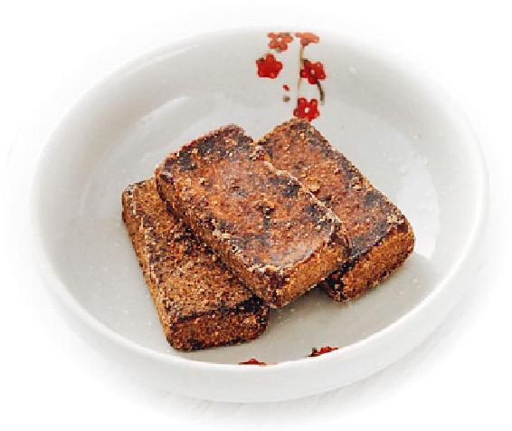
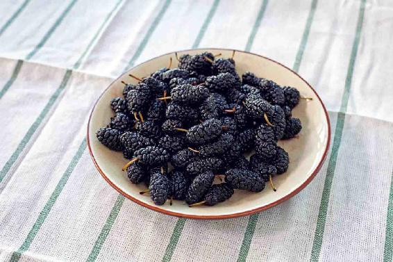
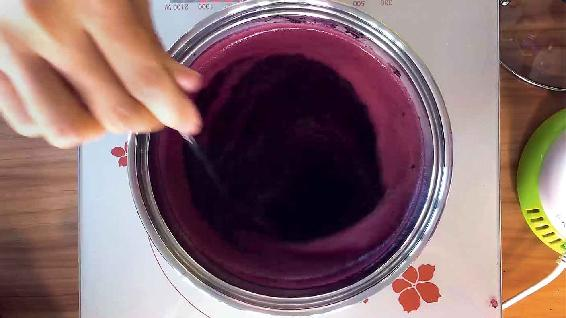
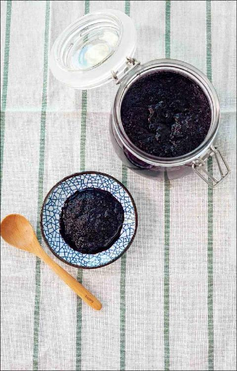

一年中有两个养心的大日子：冬至和夏至。
夏至是一年养生中的一个关键性转折点，它不仅仅是节气和节气之间的过渡，也是我们养生从上半年到下半年之间的一个过渡。
也就是说，在夏至之前，阳气是一天一天往上增长的，到了夏至节气将到达顶点，之后就要走下坡路了，而阴气就要开始起来了。因此，夏至节气的前后两天，天地之气的交换是很剧烈的。我建议您在这两天不要去做一些比较劳心劳力的事情，最好是以静养来度过这样一个时节更替的时期。
如果是平时身体比较虚弱、敏感的人，或者是老年人，最好是连续静养五到七天。
夏至节气，阴气开始生起，我们除了继续春夏养阳这门大功课之外，还要开始养护阴气的一点点萌芽，也要吃养阴的食物，特别要吃以下三种养阴食物。
第一，吃麦子。
麦为心之谷，它是滋养心阴的，是养护心阴重点要吃的一种食物。
第二，吃咸鸭蛋。
我曾经讲过，咸鸭蛋是端午节吃的食物，但它不只是管端午这一个节日，它还管整个农历五月，所以到了夏至节气，我们还要继续吃鸭蛋。
在蛋类中，鸡蛋是偏平性的，而鸭蛋是偏凉性的，是滋阴的，它既能滋养心阴，又能滋养肾阴，还能清热。
鸭蛋清的是什么热呢？清的是我们身体的心肺之热。比如，人有时候心肺会有热，感觉胸闷，可以吃咸鸭蛋来调理；小孩子有热咳，也就是干咳，舌头发红，有时候喉咙还有点痛，这种情况，都可以吃一点咸鸭蛋。关于咸鸭蛋的好处，我在《回家吃饭的智慧》这本书里讲得很详细了，您可以参考。
第三，吃桑葚。
桑葚，以前我曾经给它打过一个比方，就是“水果中的乌鸡白凤丸”。
乌鸡白凤丸，一般被认为是女性的专利，其实，它是男女皆宜的，对于男性来说也有很好的保健作用。
桑葚也是如此。它的作用有点像乌鸡白凤丸，可以滋阴、养血，还可以养肾，还能清虚热。因此，它是一种既滋补又不会让人上火的水果。
桑葚滋阴的效果很好，而且它重点滋养的是心阴、肾阴，如果在夏天吃它，对于心悸、失眠很有帮助。
有的朋友在夏天心脏早搏的现象比较明显，或者晚上睡觉，觉得心烦，有时候突然醒过来，还能听到自己心脏跳动的声音。如果经常吃桑葚，有助于减缓这些症状。
吃桑葚还能延缓衰老，像一些朋友年纪不太大，但头上长了很多的白头发，尤其是长在两鬓，这是一种早衰的标志，那就可以通过吃桑葚来辅助调理。
有些男性很喜欢补肾，然后就乱吃补肾药，这其实是很危险的。如果我们没有分清自己的问题，就乱吃补肾药，是很容易吃出肾衰竭来的。因此，您不妨经常多吃一些桑葚来给自己补肾。
桑葚上市的时间有早有晚，但不管是在哪里，一年中能吃到新鲜桑葚的时间都特别短，因为它的果期很短。如果我们想让桑葚对身体发挥补的功效，那就要长期来吃。
有一个可以长期吃到桑葚的方法，那就是把桑葚做成桑葚膏。
桑葚是分黑、白两种的，如果想要补肾，您就选择吃黑桑葚，黑桑葚才是入药的，白桑葚不入药。
滋阴养血桑葚膏


原料：黑桑葚（新鲜），甘蔗熬制的原汁红糖。
做法：
1.把新鲜的黑桑葚洗干净，用榨汁机榨成汁，然后把榨好的桑葚汁倒入锅中用小火熬。熬的过程中，注意火要很小，然后用筷子不时地搅一下，避免煳锅。
2.熬到比较浓稠的时候，再把红糖放进去，红糖最好事先稍微碾碎，以方便融化。
把红糖放进去以后，要用筷子不断地搅拌，直到红糖完全融化，然后关火起锅。
3.把熬好的桑葚膏放入玻璃瓶中，玻璃瓶一定要很干净，没有沾水、沾油。待桑葚膏冷却以后，放到冰箱冷藏就可以了。

允斌叮嘱：
每天都可以吃上几勺，吃一个夏天都没问题。

我给这个桑葚膏取了一个名字，叫作滋阴养血桑葚膏。它的作用是什么呢？其实，您从我给它取的名字上也能看出来。
它除了有滋阴、养血两大作用，还能抗衰老，对于心悸型的失眠也很有好处。
有些老年人经常头晕、耳鸣，可以经常吃桑葚膏，因为头晕、耳鸣是肾虚的表现。更年期女性也可以通过经常吃桑葚膏来预防更年期综合征。
桑葚膏不仅可以在整个夏至节气吃，还可以一直吃到秋天，如果您是我上面所列举的一些有阴虚问题的朋友，那么，您是可以一年四季常吃桑葚膏的。
桑葚膏有点像是男女都可以用的保健品。
读者评论：吃桑葚膏后，感觉睡眠好多了
莲叶：吃桑葚膏后，我感觉睡眠好多了。